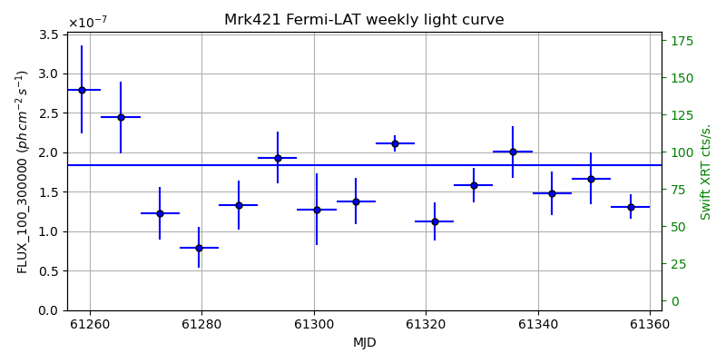
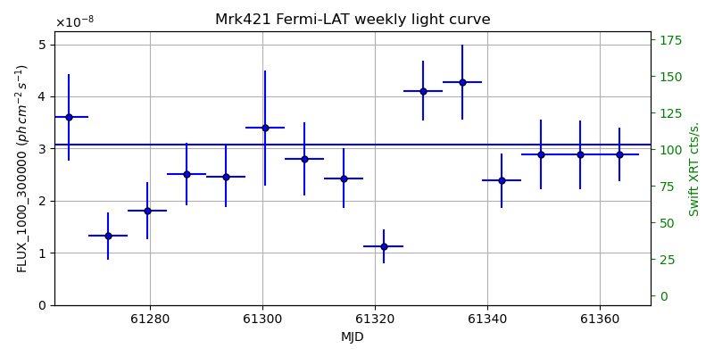

LAT Lightcurve site: https://fermi.gsfc.nasa.gov/ssc/data/access/lat/msl_lc/source/Mrk_421
Swift site: https://www.swift.psu.edu/monitoring/source.php?source=Mrk421
NED: Query
Time of last update of this page: UT: 2026-11-28 16:22 (MJD: 61372.683)
| Property | Value |
|---|---|
| R.A. | 11:04:27.36 |
| Dec. | 38:12:32.4 |
| z | 0.030 |
| 3FGL SpectrumType | PowerLaw |
| 3FGL PL Index | 1.77 |
| 3FGL Flux_100_300000 | 1.84e-07 1 / (s cm2) |
| 3FGL Flux_1000_300000 | 3.08e-08 1 / (s cm2) |
| 3FGL Flux >200 GeV | 5.07e-10 1 / (s cm2) |
| 3FGL Extrap. Crab >200 GeV | 2.15 |
| 3FGL Flux After EBL Absorption >200GeV | 4.19e-10 1 / (s cm2) |
| 3FGL EBL Crab Fraction >200GeV | 1.78 |
| MJD | dMJD | Flux | dFlux | Frac3FGL | FracCrab>200GeV | EBLFracCrab>200GeV |
|---|---|---|---|---|---|---|
| 61367.50 | 0.50 | 2.68e-07 | 9.14e-08 | 1.46 | 3.19 | 2.64 |
| 61368.50 | 0.50 | 6.12e-08 | 1.40e-08 | 0.33 | 0.73 | 0.60 |
| 61369.50 | 0.50 | 1.17e-07 | 5.21e-08 | 0.64 | 1.39 | 1.15 |
| 61370.50 | 0.50 | 1.59e-07 | 6.66e-08 | 0.86 | 1.89 | 1.56 |
| 61371.50 | 0.50 | 2.12e-07 | 0.00e+00 | 0.00 | 0.00 | 0.00 |

| MJD | dMJD | Flux | dFlux | Frac3FGL | FracCrab>200GeV | EBLFracCrab>200GeV |
|---|---|---|---|---|---|---|
| 61335.50 | 3.50 | 2.01e-07 | 3.24e-08 | 1.09 | 2.38 | 1.97 |
| 61342.50 | 3.50 | 1.48e-07 | 2.74e-08 | 0.81 | 1.76 | 1.46 |
| 61349.50 | 3.50 | 1.67e-07 | 3.26e-08 | 0.91 | 1.98 | 1.64 |
| 61356.50 | 3.50 | 1.31e-07 | 1.51e-08 | 0.71 | 1.56 | 1.29 |
| 61363.50 | 3.50 | 1.30e-07 | 1.55e-08 | 0.71 | 1.55 | 1.28 |

| MJD | dMJD | Flux | dFlux | Frac3FGL | FracCrab>200GeV | EBLFracCrab>200GeV |
|---|---|---|---|---|---|---|
| 61367.50 | 0.50 | 4.30e-08 | 0.00e+00 | 0.00 | 0.00 | 0.00 |
| 61368.50 | 0.50 | 1.77e-08 | 1.02e-08 | 0.57 | 1.25 | 1.03 |
| 61369.50 | 0.50 | 3.82e-08 | 0.00e+00 | 0.00 | 0.00 | 0.00 |
| 61370.50 | 0.50 | 3.76e-08 | 1.44e-08 | 1.22 | 2.66 | 2.20 |
| 61371.50 | 0.50 | 3.26e-08 | 0.00e+00 | 0.00 | 0.00 | 0.00 |

| MJD | dMJD | Flux | dFlux | Frac3FGL | FracCrab>200GeV | EBLFracCrab>200GeV |
|---|---|---|---|---|---|---|
| 61335.50 | 3.50 | 4.27e-08 | 7.22e-09 | 1.39 | 3.03 | 2.50 |
| 61342.50 | 3.50 | 2.38e-08 | 5.22e-09 | 0.77 | 1.69 | 1.40 |
| 61349.50 | 3.50 | 2.89e-08 | 6.69e-09 | 0.94 | 2.05 | 1.69 |
| 61356.50 | 3.50 | 2.88e-08 | 6.55e-09 | 0.94 | 2.04 | 1.69 |
| 61363.50 | 3.50 | 2.88e-08 | 5.14e-09 | 0.94 | 2.05 | 1.69 |
--------------------------------------------------------- Using user-supplied coords: 11:04:27.36 38:12:32.4 2000 --------------------------------------------------------- FLWO UT night of: 2026-11-29 Local Sid. @ Midnight: 04:08 Sunset (-15.0) (local, UT): 18:31 01:31 Sunrise (-15.0) (local, UT): 05:53 12:53 Moonrise (local, UT): 21:57 04:57 Moonset (local, UT): Moon phase: 0.72 --------------------------------------------------------- AzTime LSID UT Obj_el Obj_az Mn_el Mn_az Sep. --------------------------------------------------------- 18:31 22:39 01:31 -20.0 354.4 -32.9 32.1 35.9 19:01 23:09 02:01 -20.3 0.7 -29.4 38.9 35.6 19:31 23:39 02:31 -19.8 7.0 -25.4 45.0 35.4 20:01 00:09 03:01 -18.7 13.2 -21.0 50.6 35.2 20:31 00:39 03:31 -16.9 19.1 -16.2 55.6 35.0 21:01 01:09 04:01 -14.5 24.7 -11.1 60.2 34.8 21:31 01:39 04:31 -11.6 30.0 -5.4 64.5 34.6 22:01 02:09 05:01 -8.2 34.9 0.4 68.5 34.4 22:31 02:39 05:31 -2.8 39.4 5.8 72.2 34.2 23:01 03:10 06:01 0.4 43.5 11.6 75.8 34.1 23:31 03:40 06:31 4.7 47.3 17.5 79.4 33.9 00:01 04:10 07:01 9.4 50.8 23.6 82.9 33.8 00:31 04:40 07:31 14.5 53.9 29.7 86.5 33.7 01:01 05:10 08:01 19.7 56.7 35.8 90.3 33.6 01:31 05:40 08:31 25.1 59.3 42.0 94.4 33.5 02:01 06:10 09:01 30.7 61.6 48.1 99.1 33.4 02:31 06:40 09:31 36.4 63.6 54.2 104.7 33.3 03:01 07:10 10:01 42.1 65.2 60.1 111.7 33.2 03:31 07:40 10:31 48.0 66.6 65.6 121.1 33.2 04:01 08:10 11:01 53.9 67.5 70.5 134.7 33.1 04:31 08:40 11:31 59.8 67.7 74.0 154.7 33.1 05:01 09:11 12:01 65.7 66.8 75.2 181.1 33.1 05:31 09:41 12:31 71.5 64.0 73.6 206.8 33.0 05:53 10:02 12:53 75.6 59.4 71.0 221.2 33.0 --------------------------------------------------------- Dark hours >55 deg.: 0.00